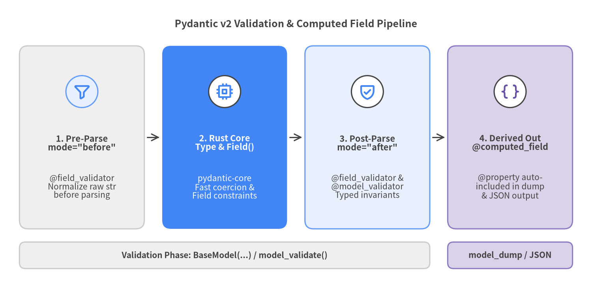
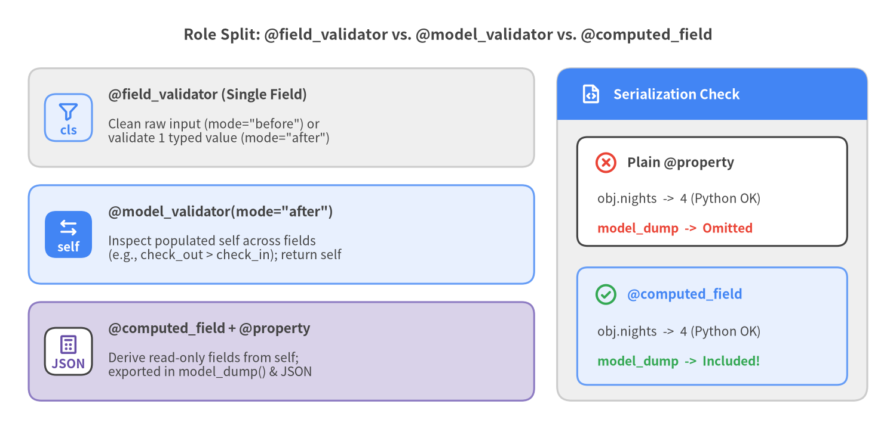

03. Custom Validators & Computed Fields
Built-in Field(...) constraints cover numeric bounds, lengths, and regex patterns, while custom Python domain logic hooks into four distinct stages: pre-parsing normalization (@field_validator(..., mode="before")), typed single-field checks (@field_validator(..., mode="after")), cross-field invariants (@model_validator(mode="after")), and derived serialization properties (@computed_field).
Understanding the exact execution order of these hooks lets Pydantic v2's Rust core handle fast type coercion while layering domain invariants cleanly before, after, and during JSON export.

View Drawlib Python Code
from drawlib.canvas import save, setup
from drawlib.icons import phosphor
from drawlib.shapes import rectangle
from drawlib.smartarts import CardList
from drawlib.styles import Styles
from drawlib.text import text
setup(width=152, height=74, dpi=150)
text(
(76.0, 67.8),
"Pydantic v2 Validation & Computed Field Pipeline",
style=Styles.DarkBold.patch(text_size=12.0),
)
stages = CardList(
style=Styles.Neutral,
text_style=Styles.DarkBold.patch(text_size=10.5),
description_style=Styles.Dark.patch(text_size=10.0),
badge_shape="circle",
badge_style=Styles.PrimaryNeutral,
icon_style=Styles.PrimaryBold,
direction="horizontal",
show_arrows=True,
arrow_style=Styles.Dark,
spacing=4.6,
)
stages.add(
'1. Pre-Parse\nmode="before"',
"@field_validator\nNormalize raw str\nbefore parsing",
icon=phosphor.funnel,
)
stages.add(
"2. Rust Core\nType & Field()",
"pydantic-core\nFast coercion &\nField constraints",
icon=phosphor.cpu,
style=Styles.PrimaryFlat,
text_style=Styles.WhiteBold.patch(text_size=10.5),
description_style=Styles.White.patch(text_size=10.0),
badge_style=Styles.White,
icon_style=Styles.PrimaryBold,
)
stages.add(
'3. Post-Parse\nmode="after"',
"@field_validator &\n@model_validator\nTyped invariants",
icon=phosphor.shield_check,
style=Styles.PrimaryNeutral,
badge_style=Styles.White,
)
stages.add(
"4. Derived Out\n@computed_field",
"@property auto-\nincluded in dump\n& JSON output",
icon=phosphor.brackets_curly,
style=Styles.SecondaryNeutral,
badge_style=Styles.White,
icon_style=Styles.SecondaryBold,
)
stages.draw(xy=(5.0, 15.2), width=142.0, height=47.0, align="bottom_left")
# Phase summary bars underneath the 4 stages
rectangle(
(57.675, 8.4),
width=105.35,
height=6.8,
style=Styles.Neutral.patch(shape_r=1.5),
text="Validation Phase: BaseModel(...) / model_validate()",
text_style=Styles.DarkBold.patch(text_size=10.0),
)
rectangle(
(130.975, 8.4),
width=32.05,
height=6.8,
style=Styles.SecondaryNeutral.patch(shape_r=1.5),
text="model_dump / JSON",
text_style=Styles.DarkBold.patch(text_size=10.0),
)
save()
1. Normalizing & Checking Fields with @field_validator
@field_validator attaches custom validation or normalization logic to one or more named fields on a BaseModel. Always place @classmethod immediately beneath @field_validator(...) and choose the execution mode based on whether your code expects raw input or an already-parsed Python type:
mode="before"(Raw Input Normalization): Runs before Pydantic's Rust core parses the field. Because incoming data could be any raw JSON or form value (object), guard type assumptions withisinstance(...)—for example, splitting a comma-separated string" python, fastapi , ai "into["python", "fastapi", "ai"]while letting nativelist[str]inputs pass straight through.mode="after"(Default — Typed Single-Field Validation): Runs after Rust core validation succeeds, guaranteeing thatvaluealready matches the annotated Python type (str). Raise aValueErrorwith a clear message whenever a domain rule fails; Pydantic automatically wraps it into a structuredValidationError.
!pip install -q pydantic
from pydantic import BaseModel, ValidationError, field_validator
RESERVED_USERNAMES = {"admin", "root", "system"}
class UserProfile(BaseModel):
username: str
tags: list[str] = []
@field_validator("tags", mode="before")
@classmethod
def split_csv_tags(cls, value: object) -> object:
if isinstance(value, str):
return [tag.strip().lower() for tag in value.split(",") if tag.strip()]
return value
@field_validator("username", mode="after")
@classmethod
def normalize_and_check_username(cls, value: str) -> str:
cleaned = value.strip().lower()
if not cleaned:
raise ValueError("username cannot be blank")
if cleaned in RESERVED_USERNAMES:
raise ValueError(f"'{cleaned}' is a reserved username")
return cleaned
profile = UserProfile(username=" Alice_Dev ", tags=" python, fastapi , ai ")
print("Normalized profile:", profile)
print("Dumped dict:", profile.model_dump())
try:
UserProfile(username="Admin", tags=["ops", "security"])
except ValidationError as err:
print("\nRejected reserved username:")
for issue in err.errors():
print(f" loc={issue['loc']} | type={issue['type']} | msg={issue['msg']}")
Normalized profile: username='alice_dev' tags=['python', 'fastapi', 'ai']
Dumped dict: {'username': 'alice_dev', 'tags': ['python', 'fastapi', 'ai']}
Rejected reserved username:
loc=('username',) | type=value_error | msg=Value error, 'admin' is a reserved username
Note: Raise
ValueError(orAssertionError) inside validators rather than instantiatingValidationErrordirectly. Pydantic v2 catchesValueErrorand enriches it with the exact field path (loc), input value, andvalue_errormetadata.
2. Cross-Field Rules (@model_validator) & Derived @computed_fields
Single-field validators operate in isolation—they should not depend on sibling fields that might have failed validation or been declared later. When a rule spans multiple fields, or when downstream APIs need derived attributes serialized into JSON, reach for @model_validator(mode="after") and @computed_field:
@model_validator(mode="after"): Runs as an instance method receivingselfonce all individual fields have passed validation and type coercion (for example,check_inandcheck_outare alreadydatetime.dateobjects). Enforce cross-field invariants likeself.check_out > self.check_inand alwaysreturn self.@computed_field+@property: Whereas a plain Python@propertyis accessible in Python code (booking.nights) yet silently omitted during serialization, stacking@computed_fieldabove@propertyincludes the computed value automatically in bothmodel_dump()andmodel_dump_json().

View Drawlib Python Code
from drawlib.canvas import save, setup
from drawlib.icons import phosphor
from drawlib.shapes import rectangle
from drawlib.smartarts import CardList, Panel
from drawlib.styles import Styles
from drawlib.text import text
setup(width=156, height=76, dpi=150)
text(
(78.0, 69.8),
"Role Split: @field_validator vs. @model_validator vs. @computed_field",
style=Styles.DarkBold.patch(text_size=12.0),
)
hooks = CardList(
style=Styles.Neutral,
text_style=Styles.DarkBold.patch(text_size=10.8),
description_style=Styles.Dark.patch(text_size=10.0),
badge_shape="rounded_rect",
badge_style=Styles.PrimaryNeutral,
badge_text_style=Styles.PrimaryBold.patch(text_size=10.0),
icon_style=Styles.PrimaryBold,
direction="vertical",
spacing=3.2,
)
hooks.add(
"@field_validator (Single Field)",
'Clean raw input (mode="before") or\nvalidate 1 typed value (mode="after")',
badge_text="cls",
icon=phosphor.funnel,
)
hooks.add(
'@model_validator(mode="after")',
"Inspect populated self across fields\n(e.g., check_out > check_in); return self",
badge_text="self",
icon=phosphor.arrows_left_right,
style=Styles.PrimaryNeutral,
badge_style=Styles.PrimaryFlat,
badge_text_style=Styles.WhiteBold.patch(text_size=10.0),
icon_style=Styles.WhiteBold,
)
hooks.add(
"@computed_field + @property",
"Derive read-only fields from self;\nexported in model_dump() & JSON",
badge_text="JSON",
icon=phosphor.calculator,
style=Styles.SecondaryNeutral,
badge_style=Styles.White,
badge_text_style=Styles.SecondaryBold.patch(text_size=10.0),
icon_style=Styles.SecondaryBold,
)
hooks.draw(xy=(5.0, 6.0), width=88.0, height=58.0, align="bottom_left")
out_panel = Panel(
"Serialization Check",
style=Styles.Neutral,
header_style=Styles.PrimaryFlat,
text_style=Styles.WhiteBold.patch(text_size=10.8),
icon=phosphor.file_code,
icon_style=Styles.WhiteBold,
header_variant="filled",
header_height=9.0,
)
out_panel.draw((97.0, 6.0), width=54.0, height=58.0, align="bottom_left")
# Top comparison card: Plain @property
rectangle((124.0, 42.5), width=47.0, height=19.0, style=Styles.White.patch(shape_r=1.8))
phosphor.x_circle((105.5, 47.5), width=4.2, style=Styles.DangerBold)
text((109.2, 47.5), "Plain @property", style=Styles.DarkBold.patch(text_size=10.5, halign="left"))
text((104.0, 41.2), "obj.nights -> 4 (Python OK)", style=Styles.Dark.patch(text_size=10.0, halign="left"))
text((104.0, 36.0), "model_dump -> Omitted", style=Styles.DangerBold.patch(text_size=10.0, halign="left"))
# Bottom comparison card: @computed_field
rectangle((124.0, 19.0), width=47.0, height=20.5, style=Styles.PrimaryNeutral.patch(shape_r=1.8))
phosphor.check_circle((105.5, 24.5), width=4.2, style=Styles.SuccessBold)
text((109.2, 24.5), "@computed_field", style=Styles.PrimaryBold.patch(text_size=10.5, halign="left"))
text((104.0, 18.0), "obj.nights -> 4 (Python OK)", style=Styles.Dark.patch(text_size=10.0, halign="left"))
text((104.0, 12.8), "model_dump -> Included!", style=Styles.SuccessBold.patch(text_size=10.0, halign="left"))
save()
Validating Date Ranges & Serializing Computed Totals
Let's combine @model_validator(mode="after") and @computed_field in a HotelBooking model. Notice how ISO date strings ("2026-05-10") are parsed into datetime.date instances first, checked for check_out > check_in, and serialized with nights and total_price included automatically in the JSON payload:
from datetime import date
from typing import Self
from pydantic import BaseModel, Field, ValidationError, computed_field, model_validator
class HotelBooking(BaseModel):
check_in: date
check_out: date
nightly_rate: int = Field(gt=0)
@model_validator(mode="after")
def check_date_order(self) -> Self:
if self.check_out <= self.check_in:
raise ValueError("check_out must be strictly after check_in")
return self
@computed_field
@property
def nights(self) -> int:
return (self.check_out - self.check_in).days
@computed_field
@property
def total_price(self) -> int:
return self.nights * self.nightly_rate
booking = HotelBooking(
check_in="2026-05-10",
check_out="2026-05-14",
nightly_rate=180,
)
print("Serialized JSON with @computed_field values:")
print(booking.model_dump_json(indent=2))
try:
HotelBooking(
check_in="2026-05-14",
check_out="2026-05-10",
nightly_rate=180,
)
except ValidationError as err:
print("\nCaught invalid date range:")
for issue in err.errors():
print(f" loc={issue['loc']} | type={issue['type']} | msg={issue['msg']}")
Serialized JSON with @computed_field values:
{
"check_in": "2026-05-10",
"check_out": "2026-05-14",
"nightly_rate": 180,
"nights": 4,
"total_price": 720
}
Caught invalid date range:
loc=() | type=value_error | msg=Value error, check_out must be strictly after check_in
Key Takeaways
- Normalize Raw Payloads in
mode="before", Validate Types inmode="after": Letpydantic-coreperform type coercion in between somode="after"validators receive guaranteed Python types. - Enforce Multi-Field Invariants in
@model_validator(mode="after"): Validate relationships likecheck_out > check_inagainst the fully populatedselfinstance and alwaysreturn self. - Expose Derived Fields via
@computed_field: Stack@computed_fieldabove@propertywhenever calculated values such asnightsandtotal_pricebelong inmodel_dump()and JSON API responses.